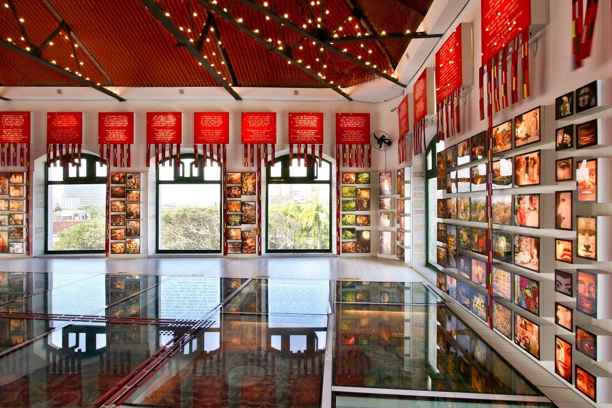
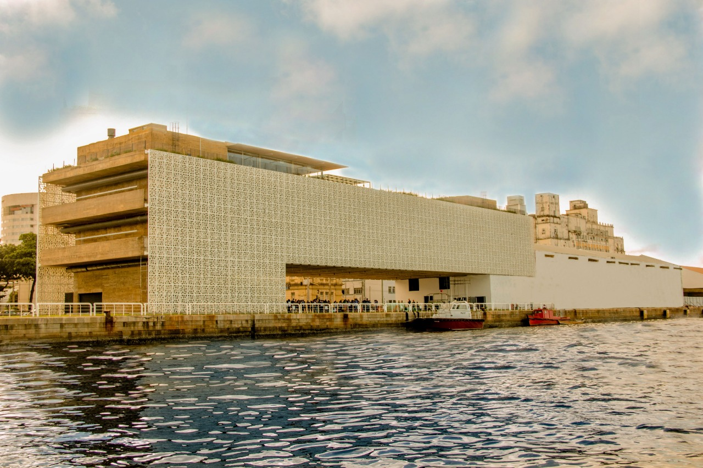

Paço do Frevo
O Paço do Frevo é um espaço cultural que celebra o frevo, uma dança e gênero musical originários do Carnaval de Pernambuco. O local oferece exposições interativas, apresentações e oficinas.
Cais do Sertão
O Cais do Sertão é um museu que homenageia a cultura sertaneja do Nordeste brasileiro. Com exposições modernas e interativas, o museu aborda a história, música e arte da região.